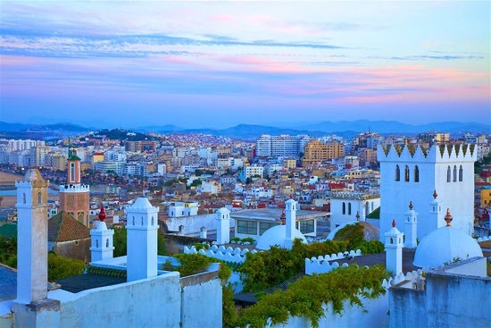
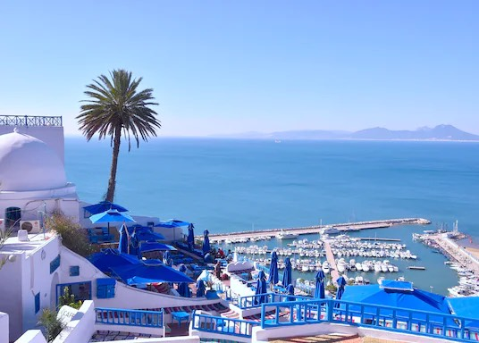
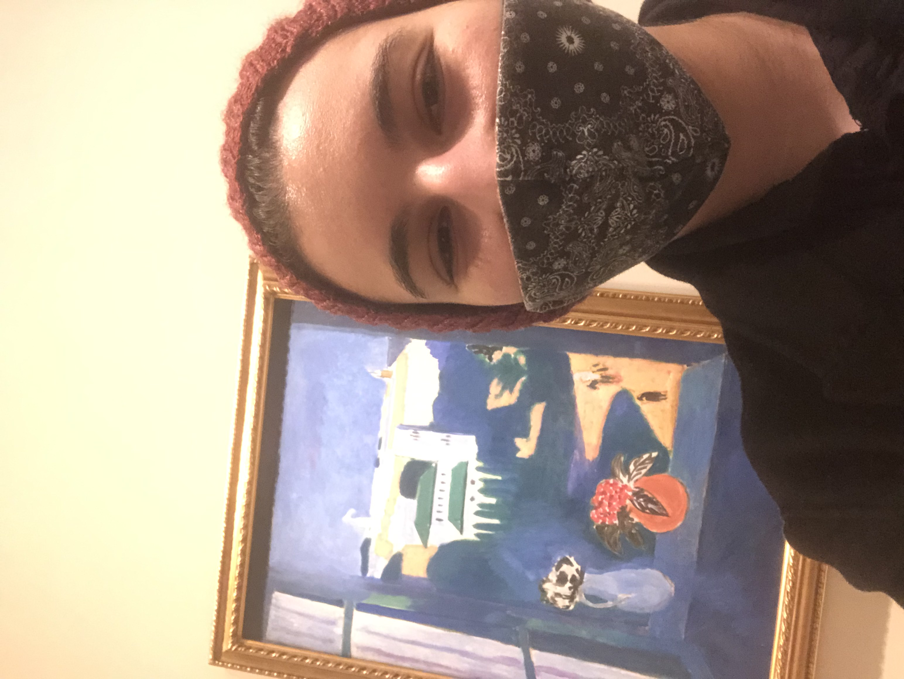
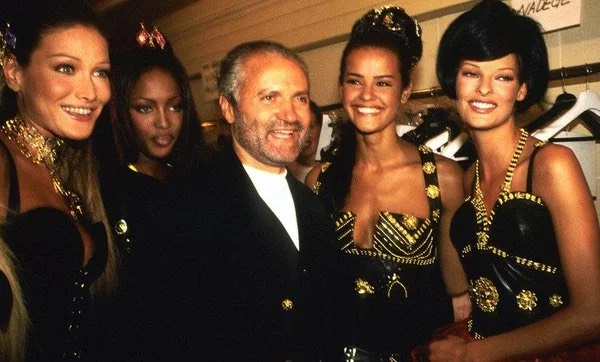

Salam ! My name is Neyl Joud, I'm 22 years young, and I'm from Rabat, the capital of the beautiful Kingdom of Morocco. I've lived there my whole life, cultivating an attachment for the meditteranean, andalusi architecturen and making everyone feel home. I've moved to France for my studies and I'm currently a junior BBA student at ESSEC Business School
I'm currently member of Enactus ESSEC Africa which is an association that helps the projects of young entrepreneurs come to life through guidance, assistance and competitions for funding. I'm in charge of communication and social media management and make sure that the events we organize and participate in are properly covered.
I've always loved travelling and I'm planning to travel around the South of the World as soon as I graduate. These countries have witnessed so many empires and civilizations pass through them and I enjoy seeing how this cultural mix has affected their current lifestyles.
So far, I've explored all the countries around the meditteranean, and it's a real pleasure to discover similar buildings, architectures and streets throughout these countries. My favorite is finding white-walled buildings such as in Tangier, Tunis, Sidi Bou Said, Capri, and the South of Spain.
TANGIER,MOROCCO
SIDI BOU SAID, TUNISIA
I'm always looking for a way to nurture my creative side, and Paris has been the right city to satisfy my hunger for it. Indeed, with its countless museums and galleries, I've been lucky to be introduced to a myriad of new artforms and disciplines.
The best part about visiting big galleries is getting to see unexpected paintings as you progress inside. The best surprise was when I visited a gallery while homesick and coming across a painting of my hometown by my favorite painter, Henri Matisse.
My life-long dream is to become a fashion designer and when my schedule allows me to, I document myself about fashion history and practice pattern-making, draping, and drawing mock designs.
My style is influenced by different eras and designers. First, Vivienne Westwood and the Anarchist Punk Movement of the 70's, then, Jean Paul Gaultier and Thierry Mugler and their way of reiventing the corsetry of the late 1800's. Finally, the designer I admire the most is Gianni Versace, for being unapologetically faithful to his extravagance, and believing entirely in his craft until he made it to the mainstream and became a totem of embellishment to the female body. 